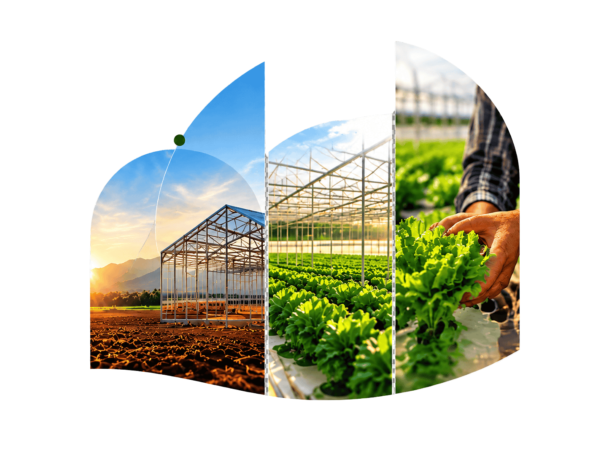
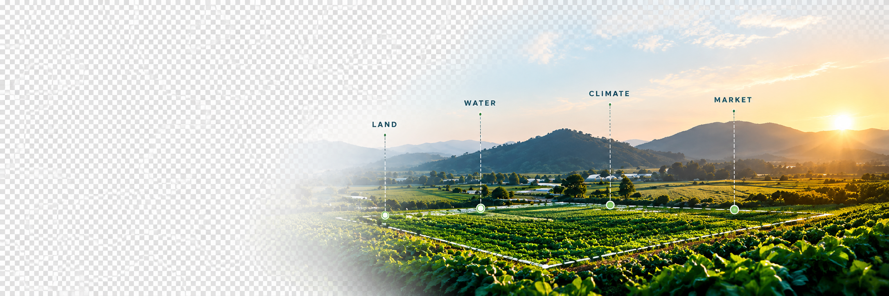
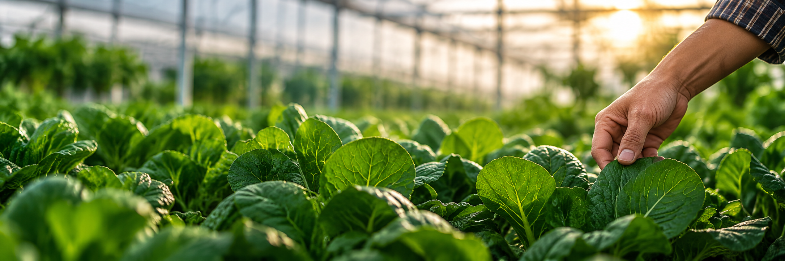
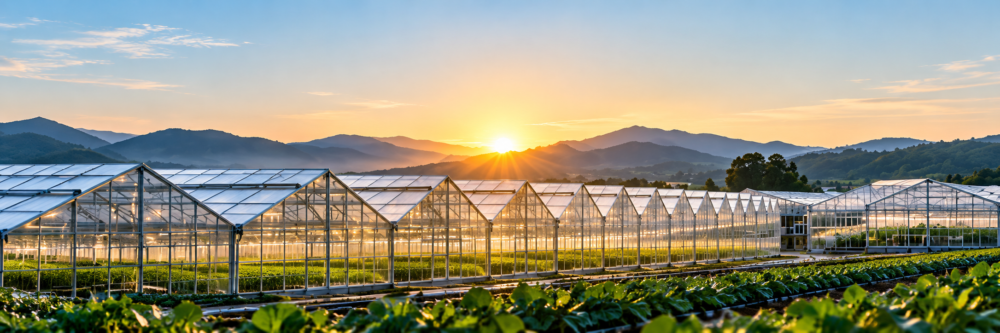
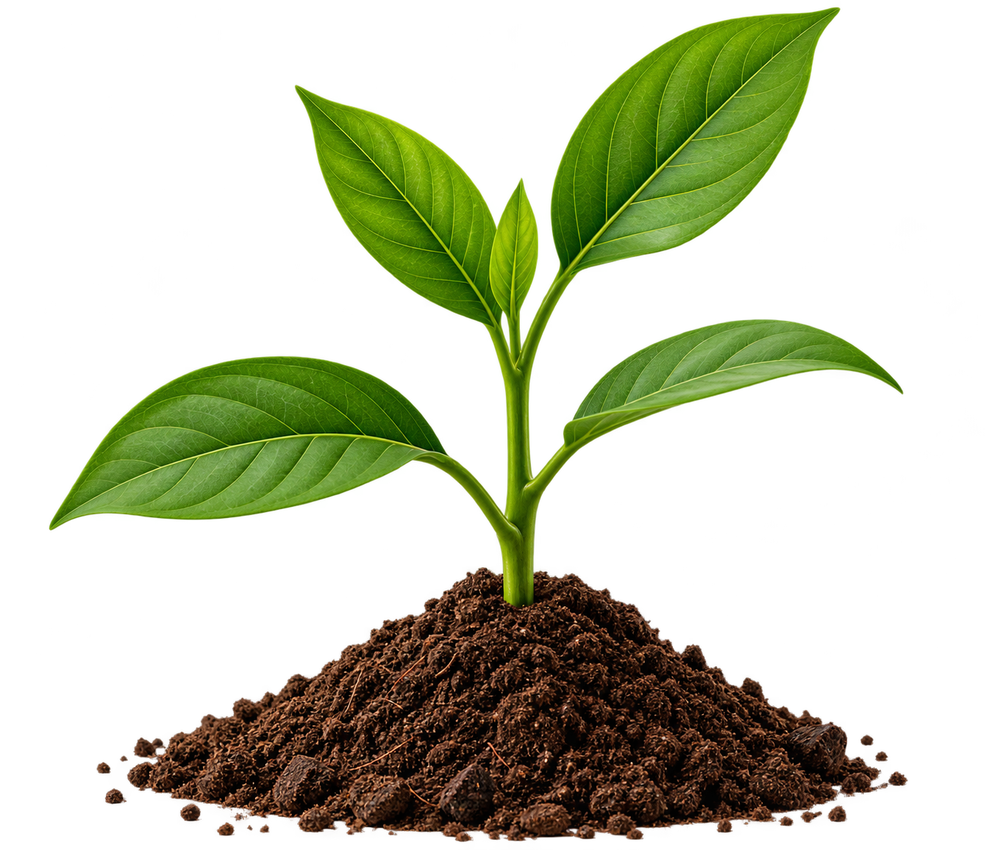
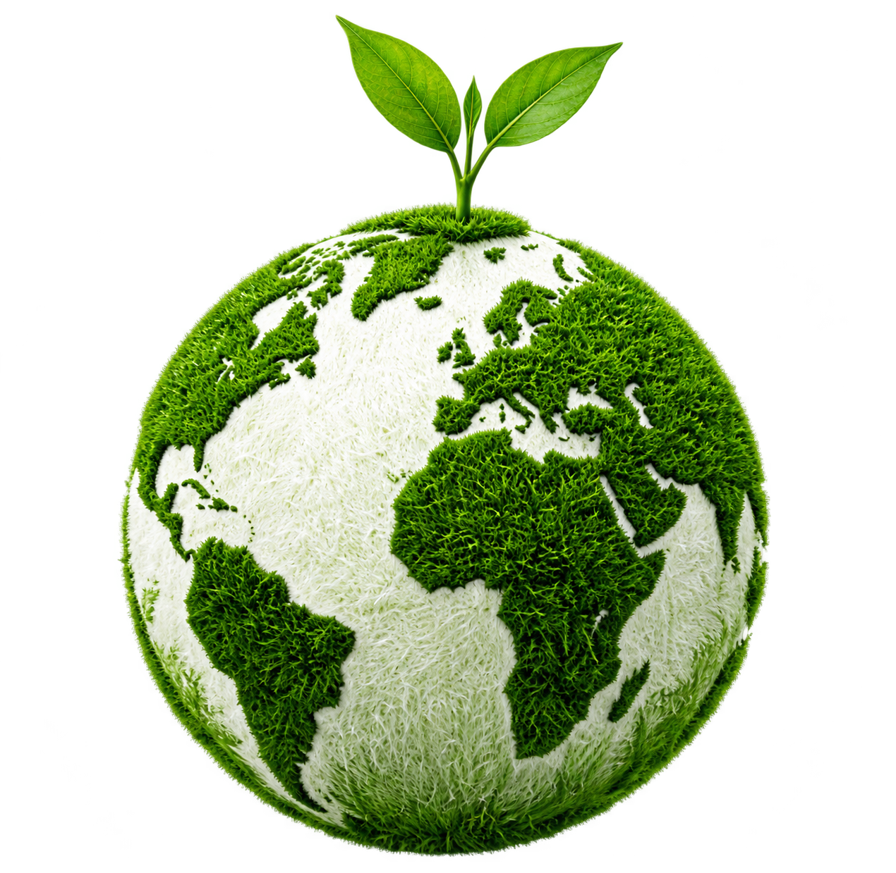

Khushali Dodiya
Founder & CGO
Protected cultivation, project strategy, greenhouse and hydroponic farm development.

We design, build and support protected farming enterprises that are profitable, sustainable and ready for tomorrow.
Our StoryOur journey began with a simple belief — better farm infrastructure leads to better harvests, better livelihoods and a more resilient agricultural future. Today, we design, build and support high-performance farming systems that turn land into long-term opportunity.
Explore Our Journey
A vision for
modern farming.
Turning ideas
into real farms.
More farmers.
More possibilities.
Infrastructure,
Technology, Agronomy.
Sustainable growth
for generations.
We combine engineering, agronomy and technology to deliver integrated farming solutions that are practical, profitable and future-ready.
Explore Our Expertise


Greenhouse, polyhouse and climate-controlled farming solutions.
Design, development and turnkey project execution for modern farms.
Scientific crop planning, cultivation support and yield optimisation.
Smart farming systems, automation and data-driven farm management.
Capacity building for farmers, teams and agri-entrepreneurs through practical training.
Advisory, market connections and ongoing handholding for long-term success.
Future Agri Infra is led by professionals with hands-on experience across protected cultivation, project planning, execution, agronomy and commercial farm development.
Founder & CGO
Protected cultivation, project strategy, greenhouse and hydroponic farm development.
Founder & CTO
Engineering, technology selection, project execution and commercial farm development.
We don’t lead projects from a boardroom.
The decisions we make are shaped by years spent on sites, inside structures, with growers, operators and project teams.
From innovative greenhouse solutions to large-scale protected cultivation, we are creating real impact across farmers, businesses and communities.
These are not just words. They guide how we work, what we recommend and how we measure success.
Principles
that build
better farms.
Because viability comes
before sales.

Right
projects
create
lasting
value.
Crop, climate, water, market
and capital decide the model.
Itemised BOQs. Named specifications.
Visible assumptions.
Clarity
builds
confidence.
Agronomy, operations and
market linkage are part of the project.

From
planting
to profit.

Better farms
begin with
better decisions.
People
Technology
Market
A stronger
tomorrow.
Guided by a clear purpose, we work towards a more productive, profitable and sustainable future for agriculture.
To provide innovative, reliable and sustainable agricultural solutions that help farmers increase productivity, improve quality and achieve long-term growth.

To be a global leader in protected agriculture, creating a future where technology, sustainability and farmer prosperity go hand in hand.

These are the principles that guide every decision we make, every project we build and every partnership we create. No matter how big we grow, these remain non-negotiable.
Our StoryWe never compromise on the quality of our materials, structures and solutions.
Every decision we make puts farmers’ long-term success at the core.
We believe in transparent, honest and ethical relationships.
We continuously adopt and improve technology to deliver better outcomes.
We are committed to environmentally responsible and future-ready farming.
Our projects and clients span across multiple states and agro-climatic zones. We understand diverse geographies, crops and market dynamics, enabling us to deliver solutions that work in the real world.
View Our Projects